这篇文章阅读大约需要15分钟。
本文讲述我在制作独立游戏《海盗与资本主义》过程中，我如何辅助claude code进行游戏开发，我构建了怎样的工作流以加速开发。我会先从我和ai的缘分说起，然后提到我用claude code的使用方式，最后我按照工作内容列举我的工作流，包括图片生成，物品和小人管理，音频管理，性能分析，世界经济系统原型开发等方面。
关于该游戏内容和实机演示，我放在了另一篇文章《海盗与资本主义》的玩法与设计里。
前因后果，我与ai
这一章讲述了我的视角下ai发展到2026年10月17日的样子，这一章在当今看本身就很有趣，在十年后看会更加有趣。
在上大学的时候我就有做独立游戏的打算，当时我装了unity断断续续地学习unity的c#编程。但是我本人的拖延症加上枯燥的学习过程让我对游戏开发总是浅尝辄止。2022年11月，chatgpt3.5问世，当时我假期在家通过openai的网站第一次使用了能和人对话的ai产品，我感到一阵眩晕，犹如亲眼目睹了原子弹的爆炸一般，我的心里默默地浮现四个字“未来已至”。
那个假期里，我开始用ai制作自动回帖机器人来捉弄百度贴吧的吧友，因此注册了四个chatgpt的账号作为请求池，用selenium网页搭建了一个ai自动回帖工具。当时chatgpt 3.5的模型能力不够，加上我的回帖机器人没有识图功能，回复的内容经常驴唇不对马嘴。但是由于当时ai的概念刚刚在中国兴起，大家并没有防范心理，因此没有一个人发现我的贴吧账号是ai回帖的，我于是总能引起一波一波的骂战。
后面的时间，新的ai模型，新的产品井喷一般蓬勃发展，2025年我在使用cursor辅助编程，当时的cursor就是那个时代典型的ai辅助编程产品，他在中间提供一个代码窗口让开发者查看代码，在右侧提供另一个窗口让你能和ai对话。依照这种形式实现ai修改代码以及代码自动补全功能。
之后github copilot发放一年的学生订阅，于是我领取之后开始使用copilot，2026年初发现claude的模型更强之后，我又开始换用claude code cli，当时Anthropic认为命令行就是一切，因此大力推行基于命令行操作的ai产品。还有一点不同在于claude code的vscode拓展不主张提供代码修改记录，也就是说Anthropic方面认为他们的ai代码修改已经不需要人工审查了。26年夏天，我也开始使用claude code cli结合unity mcp做游戏开发。直到2026年九月，我才发现claude code桌面端软件有更清楚的界面，和强大的内置浏览器操作能力，我开始使用claude code桌面端。
claude code桌面端和codex类似，已经彻底变成了一个许愿机器，其只保留会话记录和会话管理界面，而彻底抛弃了代码的显示，也就是说开发者只使用自然语言进行编程，不再触碰程序的代码（不久的未来，代码终将会变成汇编一样小众的东西）。而从2026年九月GPT-6 Astra和claude opus 5.5上线之后，ai coding领域变成了Anthropic和openai的决斗，模型的能力又上了一个新的台阶，这无疑又是另一颗原子弹的爆炸。我在想“属于独立游戏设计师的时代终于到来了”。
下面这张图把一些典型产品和模型按时间排在了一起：
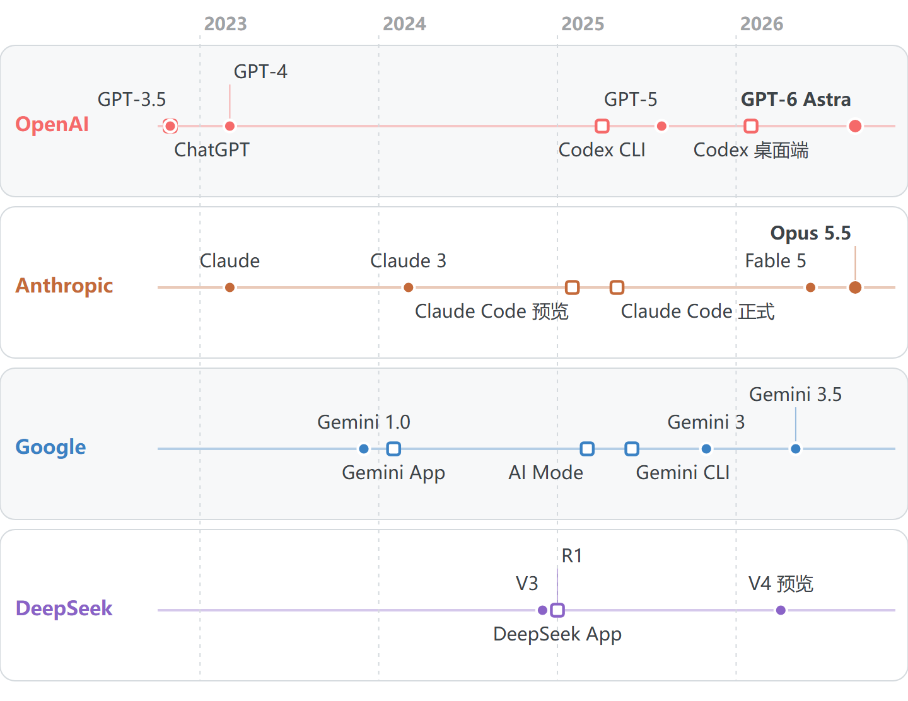
现实世界是割裂的，而我是孤独的。很多公司的面试依旧是贪心算法，依旧是动态规划，再看我周围的一切都是安宁的样子，仿佛整个城市和所有的人都与十年前的世界没有区别。但是在互联网上，尤其是在x上，ai的消息漫天飞舞，地动山摇。每一周都有翻天覆地的变化，在ai的辅助下，开发者的生产力急剧地提升，现在工作一个月能解决过去工作一年甚至几年的工作量，这让人不由得加把劲让工作快起来。一方面，我很高兴自己能够成为时代发展的亲历者，看到新的技术的崛起以及对人类社会的改造。另一方面，我又感到彷徨，因为我并不很适应这样的发展速度。我的猿猴大脑在进化角度的最初目的也许还是为了预测环境的变化，我的祖先曾经使用这个大脑规划动作，预测天气，记录地图。而在今天，我尝试用同一个大脑预测未来10年的行业发展以给自己做职业规划。悲哀的实际情况是，我完全无法预测任何事情，在这个时代没有人能够准确预测任何事情，任何更重大的变化都有可能在不久的未来出现。在这种巨大的不确定感之下，我感受到巨大的不安。而于此同时这个社会又是如此的冰冷，如果一个人没有钱，就没有食物和住所。在这样的情境下，我居然有点理解那些原始主义者与“阿米什人”了。
整体工作流
我将在这个章节讲述我用ai开发《海盗与资本主义》时候的整体工作流。
我在使用claude code以及各种工具进行游戏开发，在claude code中，我用很多会话分别推进不同的任务。每一个会话都是一个ai智能体，相当于我手下的一个员工，他们有各自的记忆，可以创建子智能体，可以并行运行，互相发消息，调用各种工具。大多会话使用opus 5.5模型，effort看情况而定，在medium和ultracode之间。我的会话大致如下：
- warship all 与我讨论整体项目 协调各个会话 整合结果
- warship perf 做性能分析与性能优化
- warship art 负责美术工作
- warship audio 负责音频工作
- map gen and clouds 负责远处背景的地形程序化生成
- pawn lab 负责游戏小人形象的程序化生成
- capitalism 负责游戏世界经济模拟系统的开发与调试
多ai会话，warship是我使用的早期游戏代号
claude code有很多自身内部工具，包括联网搜索，操作电脑文件，操作内部浏览器等等。除此之外，我使用的外部工具有：
- unity cli 新一代unity提供的ai扩展 用于ai开发unity游戏，取代了之前的unity mcp
- blender mcp ai在blender直接建模，以及场景摆放
- gpt image bridge 自创的图像生成skill，允许claude code调用我的codex cli进行生图
总的来说，现在的ai能力完全足够挑起大梁，独当一面。但是和ai合作的时候仍然有很多注意事项。按照我的经验来说有以下几个问题
-
ai的记忆能力（上下文）是有限的，所以ai擅长专注于单一任务，但是不擅长综合与管理。
-
ai的信息检索和实践能力强，但是创新能力一般。所以ai擅长做项目复现，不擅长做全新算法的研发 。
-
ai的能力是有限的，普通任务可以依靠ai长时间自我迭代解决，少数特殊任务必然依靠人工干预。
-
ai的任务耗时是个问题。做开发消耗的token不是问题，但是任务耗时太长会影响开发节奏。
因此，我开发的时候有几个技巧：
-
在我有大块时间的时候，我会主导ai开发那些最需要创意和综合能力的工作，例如游戏的玩法设计，此时ai的主要职责是辅助我完成头脑风暴，帮我检索与整理信息辅助我判断（例如做竞品分析）。在我碎片化的时间，我来监督ai完成它一般擅长的工作，例如我监督美术素材的生产，修改svg图片等。这个过程中ai可以半自动完成工作，但仍然需要人工干预。在我不在的时间（吃饭 睡眠 休息的时候），ai全自动完成那些它擅长的工作，包括性能测试与优化，包括一个成熟系统的参数调整，在此过程中ai完全可以自主进行编程和测试，极少数情况我需要介入并做出决议。例如我们是否需要做一个转场动画来遮盖场景更换的痕迹。
-
在ai做那些我并不放心的任务的时候，或者ai已经浪费大量时间在某个任务上的时候，可以让ai首先生成一份方案，我通过查看方案检查整个环节是否有可以优化的地方。例如我们做“世界经济模拟系统”的时候，ai最开始开发缓慢。我提出了一些建议包括“从小的规模开始做模拟，首先观察量与量之间的因果关系，再放大到目标规模”，以及“在电脑16个物理核上同时跑，可以一次收集多组实验数据”，这帮助ai加快了很多开发进程
-
做复杂的新任务之前，首先让ai调研现有领域内的最新进展。ai的知识储备虽然渊博，但是很多时候没有足够的发散能力与常识。让ai查找和复现sota的项目，可以快速积累ai的知识储备达到最先进水平。
-
ai很容易被误导，因此在发消息或者发送图片参考的时候，不要提供错误信息或者错误示例。应该清晰明了的直接描述任务以及正确的结果应该是什么样子的
2d美术资源生成途径
现有的2d图片创作工作流大致有着色器 ， svg矢量图， gpt image 2.5，blender建模渲染。（这部分并没有涵盖世界模型，以及midjourney等等）
- 着色器 ：直接用代码绘制一个图像
- svg：矢量图，本质是一段描述形状的文字，所以 AI 写起来最顺手，人也能直接改里面的数字和颜色。
- gpt image 2.5：OpenAI 的图像生成模型，用文字描述直接出一张图。
- blender 建模渲染：让 AI 用 Blender 的脚本建出三维模型，再从正上方渲染成图。
他们有各自的特点，svg和gpt image 2.5生成速度比较快，着色器 和blender相对更慢，前者需要迭代，后者需要建模渲染
以下是效果展示，我用他们在同样的agent配置情况，同样的要求下生成了四个图片
- 着色器直接绘制 是claude code原生的生图方式 需要迭代 画面还可以
- svg 适合做现代扁平风格 方便人手动修改 不擅长复杂画面和写实画风
- gpt image 2.5有极佳的生成质量 但是风格控制和视角控制很困难
- blender渲染 擅长硬表面，很不擅长软体雕塑，很容易约束形状 控制视角
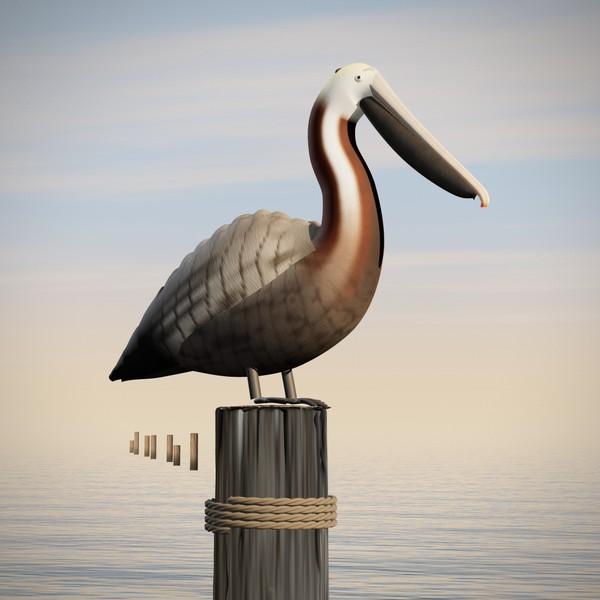
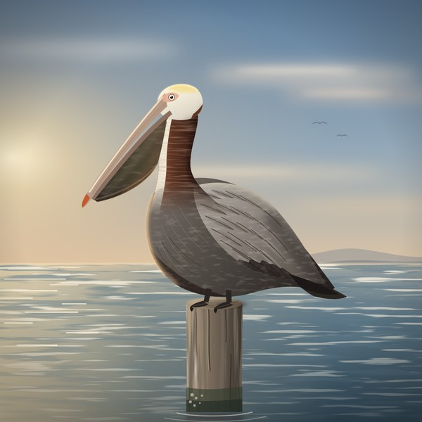
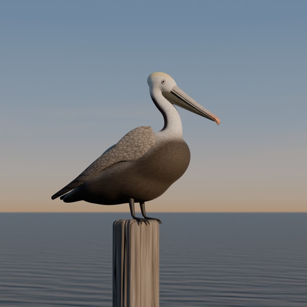
一个实用的方法是，先用blender或者svg做粗糙的但是容易控制结构和视图的草图，然后将草图作为参考交给gpt image 2.5进行图生图。这让我不禁想到了一个关于dlss 的梗图
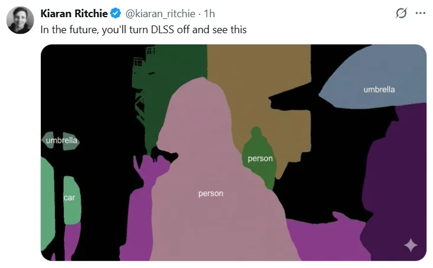
对于《海盗和资本主义》，该项目是一个俯视角为主的2d游戏，因此主要需要的美术资源大致如下：
- 船体和物品 需要固定大小的 纯俯视角的 分图层的图片素材
- 游戏内的小人 程序化生成正面 侧面 背面的小人 尺寸和位置需要严格统一
- 世界远景 需要无限生成的地形多样的纯俯视角的世界远景
因此，我给每一类素材挑的生成方法是这样的：
| 素材 | 用什么方法生成 | 为什么 |
|---|---|---|
| 船体和物品 | 先用 gpt image 生成概念图，放到art lab进行人工审核，再用gpt image拆成图层、最后进行标准化； | 首先生成纯俯视角概念图，确认视图正确、设计美观之后再拆解图层。标准化可以移除接近透明的颜色，控制中心和大小 |
| 小人 | gpt image 生成多图层的参考图，使用opus结合脚本转矢量图，最后在 Pawn lab拼装与审核 | 要求正侧背三个视图、大小严格统一、颜色可更换，矢量图最方便修改 |
| 远景 | 程序化生成远处的地形和云 | 需要无限生成清晰的、连续的地形 |
物品生成与管理
物品的生成我用的是上面表格里的流程。下面是一个加农炮的素材组装过程：
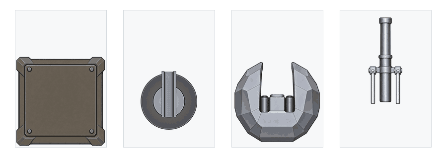
为了方便我查看与管理游戏内的物品美术素材，我做了一个工具网页，叫“美术工作台”（Art Lab）。
美术工作台管理着所有的游戏内美术资源以及开发过程中的美术草图。游戏内一件物品的美术资源要顺利进入游戏需要经历三个阶段：概念图（整件东西长什么样）、分解图（拆成图层之后对不对）、游戏效果（真的放进游戏里好不好看）。只有通过三个阶段的物品才算定稿。而定稿后的物品也具有自己的交付单，包含星级与备注。美术工作台的一个功能就是把每件物品每一步生成的图片、我的请求、AI 的回复、自动检查的结果、标准化后的结果、我的最终打分与备注，都整理到同一张卡片里。这样我可以方便地调整任何美术资源、以及替换掉我之前并不满意的美术素材。美术工作台的外表如下图所示：
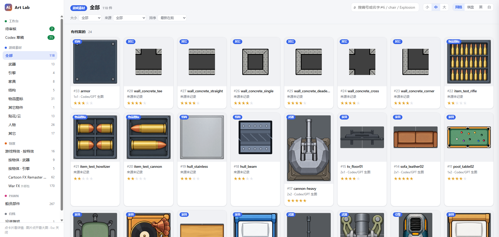
此外美术工作台也负责让我管理游戏特效。我让新做的特效先显示在美术工作台中供我预览，我同意之后再放置到unity游戏中，这种工作模式一方面能够让warship art会话不大量抢占unity编辑器，另一方面使用私有的网页工具也方便会话高效操作特效动画。网页的特效预览部分如下图所示：
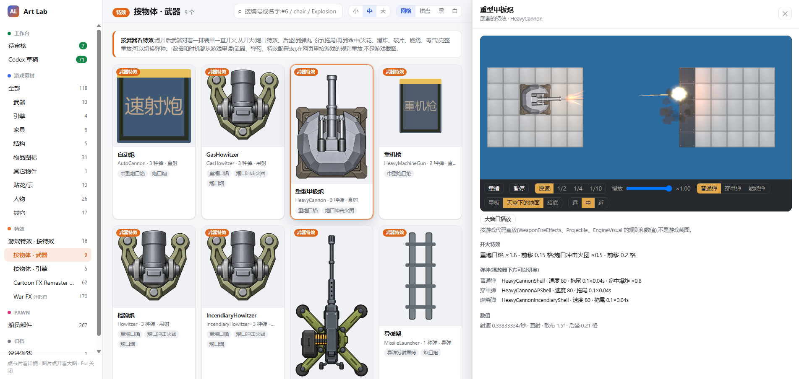
Pawn Lab
在提到pawn lab之前，我需要先声明游戏内的小人生成。小人就是pawn，指游戏内的人类形象。为了程序化生成，相同风格，不同形象，三视图统一的小人，以及实现小人更换装备和衣物时候的形象变化，我采用了类似环世界与监狱建筑师的矢量图小人绘制。具体来说：每一个小人都是由多个矢量图堆叠而成。最底层的包括头颅和躯干，然后叠加第一层上衣和裤子，眉毛眼睛和头发，以及第二层衣物和配件。在这样的基础上，只要我们制作一个新衣物的正面 侧面 背面视图的样子，以及规定其图层叠放顺序，我们就可以为这个小人形象增添一个新的可选衣物。以下是一个动画演示小人的形象生成：
由于要大量地检查以及编辑小人的服装、发型、五官生成等，我制作了一个名为 Pawn Lab 的小人工作台。pawn lab是一个我自制的在线网页端的矢量图编辑工具（是的你没有听错，我的确在维护一个矢量图在线编辑工具）。他的矢量图编辑功能与我用过的inkscape、affinity比较相似，但是新增了很多项目单独需要的功能：小人物品装配面板，现有物品检查面板、以及对正侧后三个视图下的矢量图编辑支持等等。我使用它检查以及修改ai生成的svg美术资源。
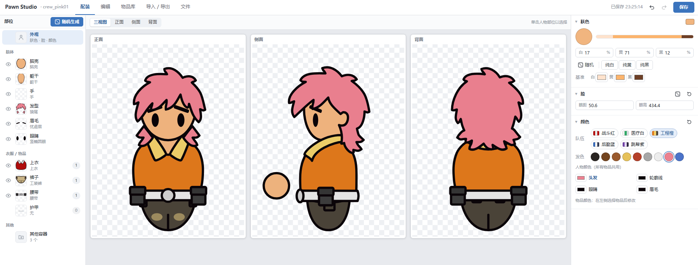
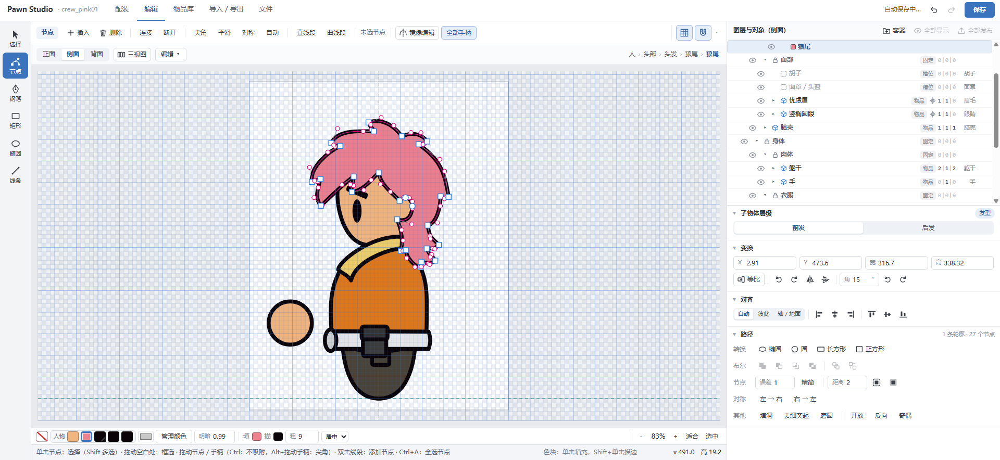
很漂亮不是吗？上图展示物品装配，下图展示编辑矢量图的曲线手柄。
音频工作流
我做了两层音频工作使用的工作台。第一层是一个本地的音频试听网页，我可以将外部的音频资源导入到这个网页中，在里面一个个试听音频，给它们打星，标注将来的用途。下图是音频试听页：
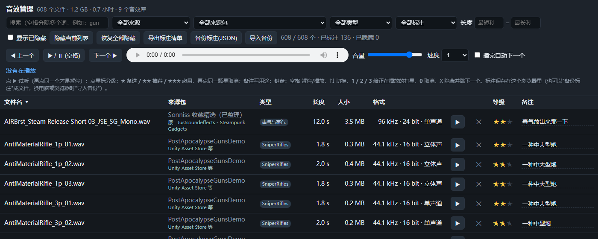
被音频试听页标记的音频会被当做备选的游戏音效，送入第二层音频工作台“sound lab”。这是一个unity editor游戏内集成的音频试听工作台，使用内置的控制台代码唤醒。我将每个要测的游戏事件当作一个槽位（比如“放置物品”槽位，“按钮按下”槽位），而sound lab能够让游戏事件槽位触发我在其中选中的备选音效，因此我可以选中一个音效，在游戏中触发真实的事件（例如放置一个物品），并听到这个音效对应这个事件是否合适。sound lab还提供简易的开头剪裁，音量平衡，屏蔽其他声音等实用功能。以下是sound lab在游戏内的界面
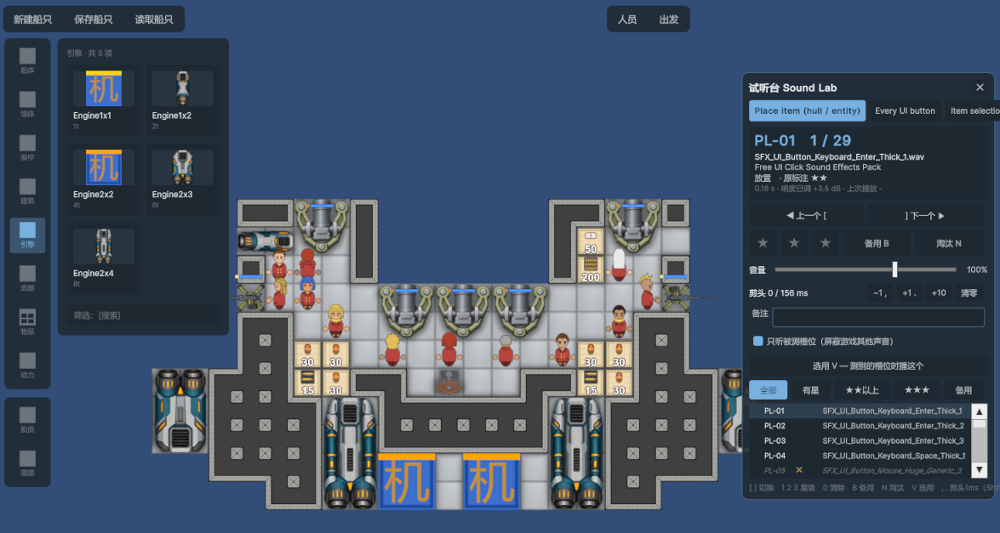
顺便要说一下 音频工作流其实是很让我头疼的部分，根源在于claude code没有音频创建和音频分析能力，以至于我要像古代人一样去真正试听音效。我不由得很敬佩那些伟大的单人游戏开发者，例如notch，星露谷物语的作者，undertale的作者（虽然他的美术做的有点烂，好吧我知道我是个更糟糕的美术工作者）。
性能分析工作流
我和ai构建了名为“perf”的游戏内性能分析工具，其可以通过控制台打开。界面如下图所示。这个工具会显示一秒内的平均帧数，十秒的最慢帧，以及各种耗时构成。
用这个图作为例子，我们可以看到最近十秒内，有三帧超过了33ms，最慢帧发生在7.4秒前，它的耗时为43.3ms，其又可以被拆分为“脚本 35.1 ms + 物理 0.0 + 渲染和界面 6.3 + 其他 1.9 ms”
该工具还显示当前帧：主线程、GPU、物理、脚本、渲染各自的耗时。以及该游戏内的船只碰撞耗时和世界经济系统解算耗时。
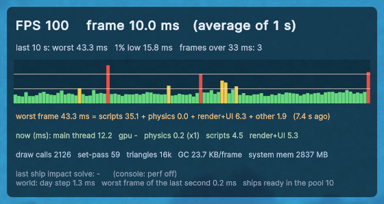
我一般在unity editor内游玩，perf工具可以给我寻找卡顿成因提供参考。然而考虑到真实打包后的游戏通常有更好的表现，我使用warship perf测试真实游玩帧率并进行优化。
这个会话会首先打包出正式包来，然后它让游戏在后台自己回放固定的场景（10 对 10 或 30 对 30 的混战、两船相撞、高速飞行、刚启动等场景），然后记录最慢的 1% 帧、最慢的一帧、超过 16.7 毫秒的帧位置，再加上撞击、选目标这些环节的单独计时和垃圾回收的次数。
找到卡顿发生位置之后，warship perf用带分析器的 dev 包重新播放同一个场景，找到卡顿发生帧，排序每个函数的耗时，从最费时的开始往下拆解。常见的原因是重复计算、每帧新建大数组、一艘船断开时所有船都在重算等。每次只改动一处，凡是能做到“结果完全一样”的优化，就保留旧算法逐条对拍，单元测试全过、编辑器运行一遍之后、再在打包版上对比之后，把数字写进提交说明。
世界经济系统开发工作流
我给游戏世界开发了一套动态的世界经济系统，其中对生产，消费，贸易等经济行为做了真实模拟。我追求使用系统的负反馈调节实现我想要的稳态，使用价格差催生商船的产生，而不凭空生成任何单位，因此这个开发过程要更加艰难。
为了高效进行经济系统的原型开发与测试，我首先不依赖unity，而是让ai用JavaScript 网页写了原型，里面有城镇、商船、海盗、军队、战争和货币。整个开发和调试都由 capitalism 会话负责，在全部调试好后 Unity 再把它当成一个子进程来请求数据。
为了方便我来审查，这个原型包含有一个完整的界面，如下所示。在其中可以直接看到整个系统的运行：城市、势力范围、船和风向，空中障碍物，右边是总人口、货币总量、商船 / 海盗 / 军队的数量等参数。
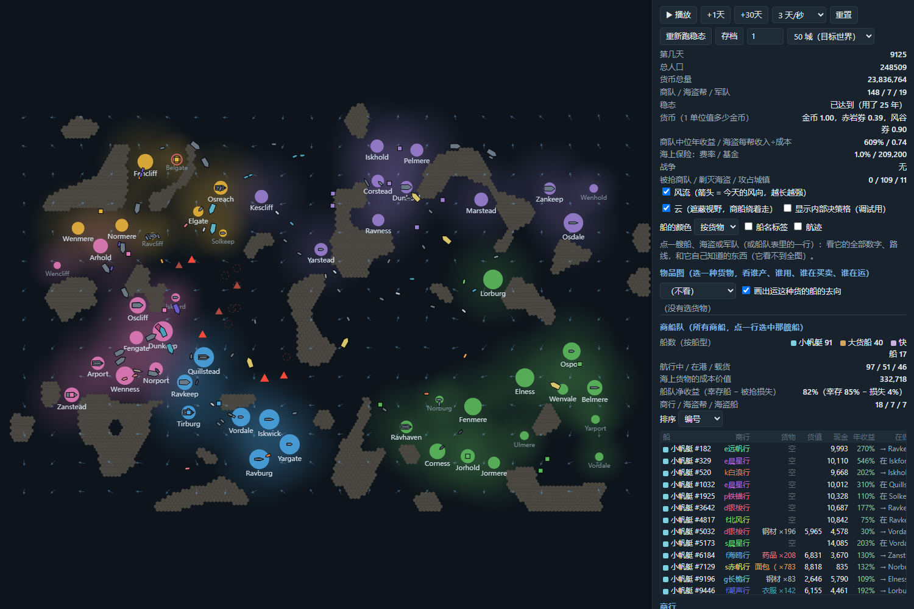
在这个世界经济系统的原型开发过程中，我逐渐梳理出了一套和capitalism会话协作的工作流：我只提供方向和要求，不提供具体数字的约束。我要求这个系统设计的目的是给玩家识别经济的运转方式，因此玩家需要能够从里面读出航道、价差、巡逻和战争的周期。我们使用以下指标衡量世界好坏：商路是否稳定、价格差距是否稳定、三种船的数量是否稳定、动态平衡是否难以打破。我明确禁止系统强行固定数量的行为，稳定只能来自收益的负反馈；不准人为加奖励或噪声。
capitalism 会话负责把这些要求变成能测量的数值指标，用指标观察世界是否符合要求。它搭了一个实验室，允许同时跑多个随机种子。考虑到这个世界要跑几十年才稳定，所以它总是忽略掉世界成长期的波动，从稳定状态之后开始观察。遇到问题时，它并不会强制规定数量，而是查看为什么收益没有吸引新的投机者加入，查看系统内的单位将时间用在什么地方，整个系统的金钱流向什么地方。每个改动都从假设出发，尝试几个不同的取值，不光看期望改善的那项指标，也看别的指标有没有被拖累；选定以后让世界重新跑稳，再用热力图确认规律可见。做完后，实验数据写进提交记录，踩过的坑写进说明文档，设计上的决定写进玩法文档。